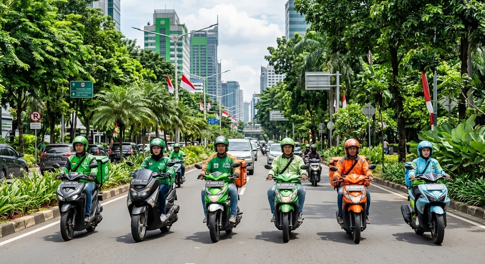

Wadah berkumpul yang dirancang khusus untuk membangun relasi, berbagi informasi lapangan, dan menjaga solidaritas antar mitra pengemudi dari seluruh penjuru Indonesia.
Gabung Komunitas
Kebersamaan Driver dari Berbagai Platform
Kami berfokus pada kolaborasi sehat dan dukungan moril di lapangan, bukan sekadar grup obrolan biasa.
Bagikan dan pantau kondisi lalu lintas, pembaruan rute, serta titik keramaian pesanan secara tertib dan transparan.
Akses jaringan komunikasi darurat jika Anda mengalami kendala teknis pada kendaraan atau situasi mendesak lainnya saat bekerja.
Ikuti sesi kopi darat (kopdar) terstruktur untuk membahas manajemen keuangan, perawatan kendaraan, hingga regulasi berlalu lintas.
Tingkatkan produktivitas kerja dan perluas jaringan pertemanan bersama rekan-rekan seperjuangan di jalan.
Gabung Grup Telegram